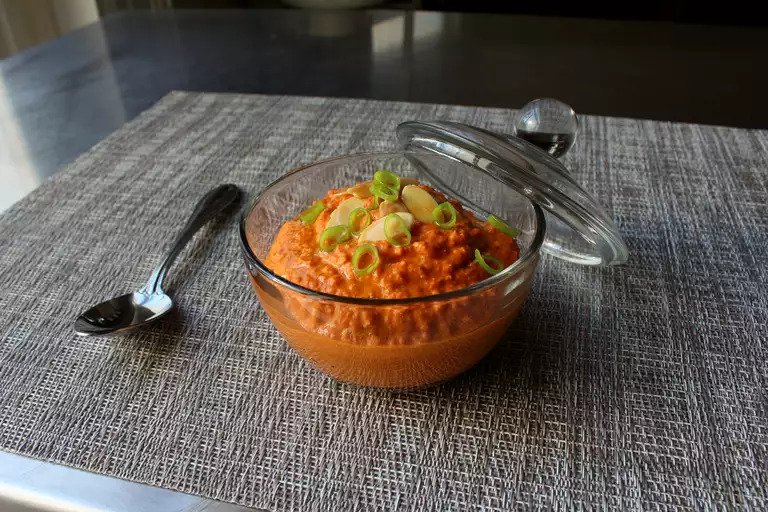

Mouth-Watering Romesco

Description
One of the all-time greatest summer sauces, this Spanish classic is perfect with anything off the grill, especially vegetables and seafood. It also makes for an unbelievable sandwich spread, as well as a perfect secret ingredient for your favorite potato or pasta salad dressings. Whether we're talking the level of heat, or ratio between the ingredients, or how smooth or course you grind it, you shouldn't hesitate to adapt this to your tastes.
Ingredients
- 3 large red bell peppers
- 1/2 cup olive oil
- 8 cloves garlic
- 1 cup cubed stale bread
- 3/4 cup roasted almonds
- 1/4 cup sherry vinegar
- 1 tablespoon smoked Spanish paprika
- 1 teaspoon cayenne pepper (Optional)
- 1 teaspoon kosher salt, or more to taste
- Turn on a gas stove and roast bell peppers over the open flame until soft and blackened, about 5 minutes per side. Peppers should emit steam when pressed. Transfer peppers to a bowl, cover, and let cool to room temperature.
- Combine oil and garlic in a skillet. Turn heat to medium and cook, stirring constantly, until garlic just starts to turn golden brown, about 3 minutes. Move garlic to a ramekin using a slotted spoon, leaving all the oil in the skillet.
- Toast bread in the oil until golden brown, 2 to 3 minutes.
- Peel peppers under running water. Cut peppers open and remove the seeds. Chop into cubes and transfer to a food processor. Add garlic, bread cubes with oil, almonds, vinegar, paprika, cayenne, and salt. Pulse on and off until sauce is well combined and reaches your desired texture.
- Transfer sauce to a bowl. Cover with plastic wrap and refrigerate to intensify the flavors, 8 hours to overnight.